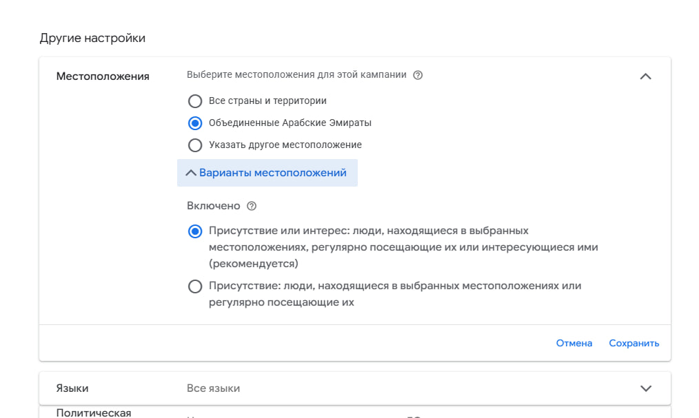
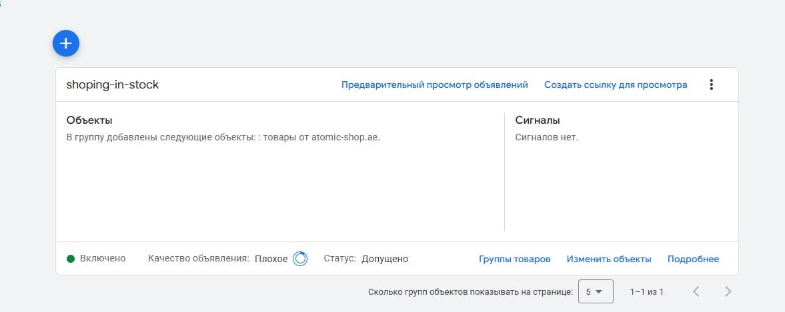
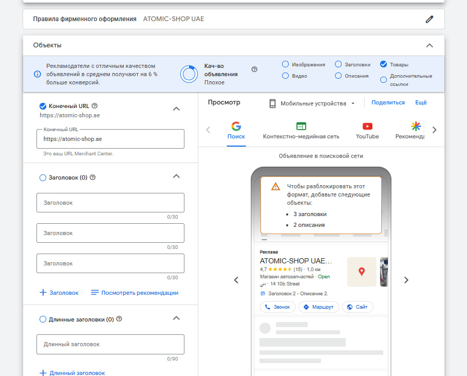
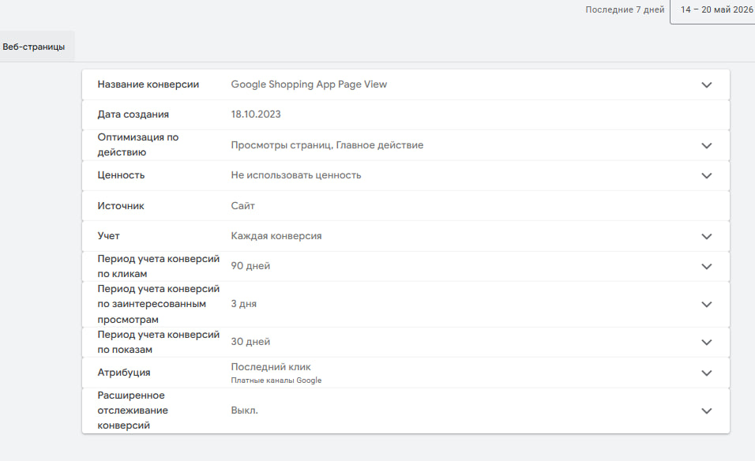
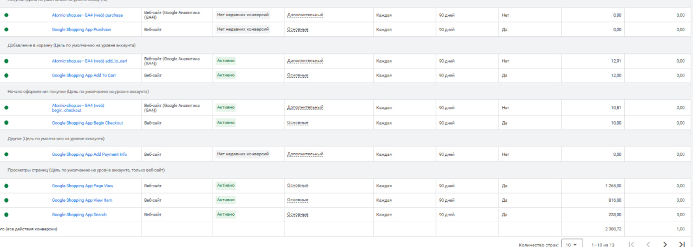
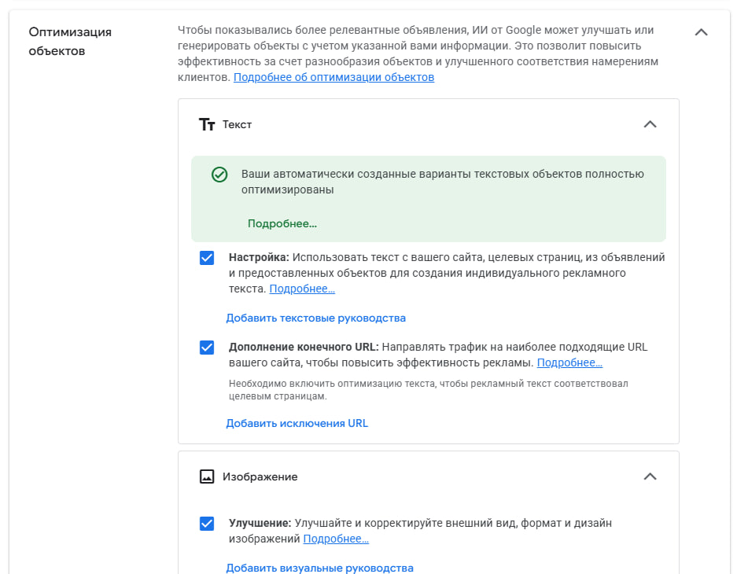
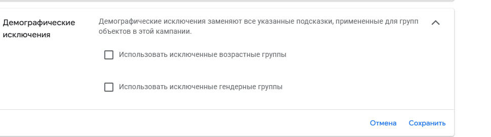
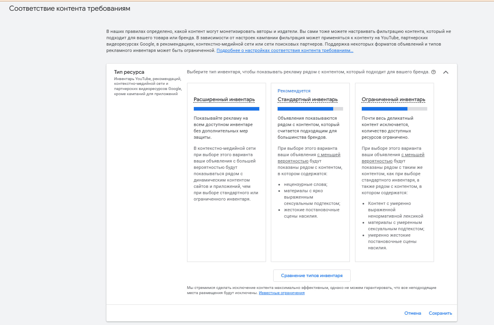
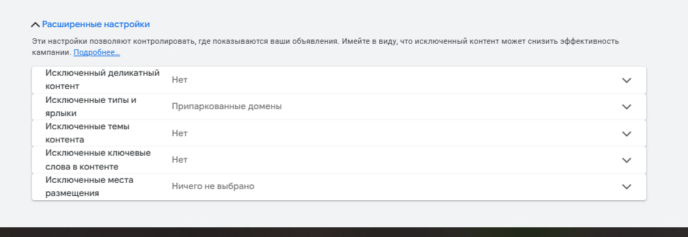
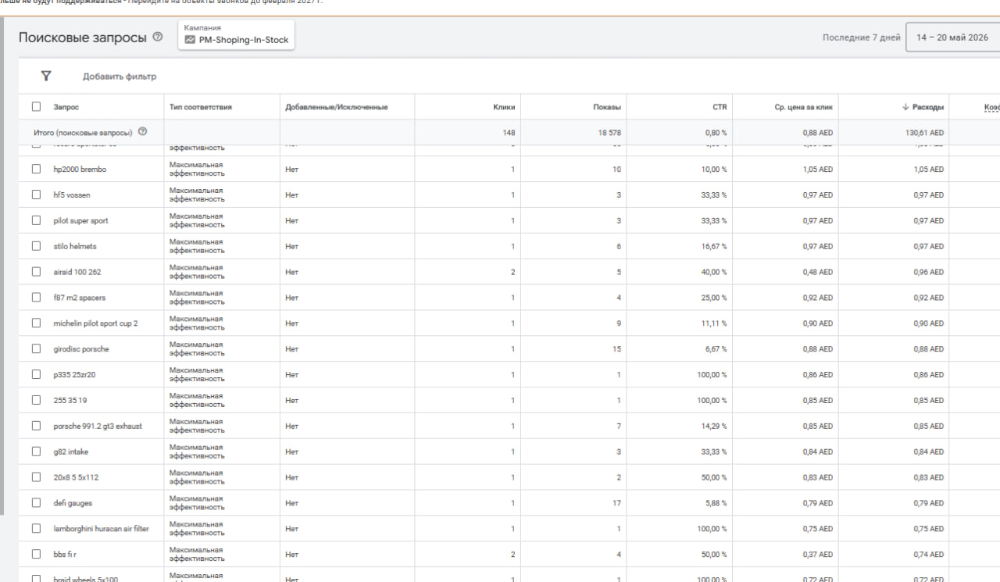

Аккаунт atomic-shop.ae — магазин автозапчастей и тюнинга, ОАЭ. Запущена одна Performance Max кампания с бюджетом 60 AED/день. На первый взгляд всё работает — клики есть, показы есть. Но внутри — девять настроечных ошибок, которые вместе дают самый неприятный результат: деньги тратятся, а покупок не считается.
Кампания оптимизируется по просмотрам страниц, а не по покупкам. Google видит тысячи «конверсий» (просмотры), считает что всё отлично, и продолжает тратить бюджет — не отличая покупателя от случайного зеваки. Это системная ошибка в фундаменте, которую не исправить ни объявлениями, ни минус-словами.
Выбрана страна — ОАЭ. Казалось бы, нормально. Но дьявол в деталях: включён режим «Присутствие или интерес». Это значит, что реклама показывается не только тем, кто физически находится в ОАЭ, но и тем, кто просто интересуется Эмиратами — сидя в Египте, России или Пакистане. Купить через atomic-shop.ae они вряд ли смогут.
Параллельно выбраны «Все языки». Это не так критично, как кажется — язык браузера не всегда совпадает с реальным языком человека, и в ОАЭ аудитория очень разнородная. Но «все» — это перебор: реклама охватывает и тех, кто никак не связан с целевым рынком. Правильнее выбрать 4–5 языков, которые реально представлены среди покупателей.

В группе объектов — ни одного заголовка, ни одного описания. Ноль. Google сам написал «Добавьте: 3 заголовка и 2 описания — иначе этот формат недоступен». Качество объявления: «Плохое». Формат поисковой рекламы заблокирован.
При этом включена «Оптимизация объектов» — Google генерирует тексты автоматически с сайта. Это не замена нормальным заголовкам: AI-генерация работает поверх, а не вместо. Без базовых объектов кампания не может нормально показываться в поиске.


Это самая критичная ошибка. Основное целевое действие кампании — «Google Shopping App Page View», то есть просмотр страницы. Не добавление в корзину. Не оформление заказа. Просто факт перехода на сайт.
Google видит эти просмотры как «конверсии» и думает, что кампания работает отлично. Он продолжает крутить рекламу на всех, кто кликает — не разбирая, купил человек или ушёл через 5 секунд. Фактические покупки в аккаунте зафиксированы как «Нет недавних конверсий», а ценность транзакций вообще не передаётся.


Performance Max использует машинное обучение Google. Но чтобы AI понял, кому показывать рекламу, нужны сигналы — подсказки о целевой аудитории. Сейчас их нет совсем: раздел «Сигналы» показывает пустую страницу.
Без сигналов алгоритм обучается с нуля на реальных данных — это нормально, но занимает время и стоит денег. С сигналами (аудитории покупателей, похожие аудитории, аудитории по интересам к автозапчастям) обучение проходит быстрее и точнее.
В настройках включена автогенерация текста — Google берёт контент с сайта и создаёт варианты объявлений самостоятельно. Формально статус «Оптимизированы». Изображения тоже подключены — здесь всё в порядке.
Проблема в том, что это не отменяет необходимость вручную добавить основные объекты. Автогенерация улучшает существующее — без базовых заголовков и описаний ей нечего улучшать, и формат поиска остаётся заблокированным (см. Проблему 02).

В разделе «Демографические исключения» не проставлены галочки ни для возраста, ни для пола. Это значит, что кампания не применяет исключения, заданные на уровне групп объявлений — реклама может показываться любым возрастным группам.
Для магазина высокопроизводительных автозапчастей (тормоза Brembo, диски Vossen, шины Michelin Pilot Sport) покупатель — это человек с машиной, деньгами и интересом к тюнингу. Показы на аудиторию младше 18 лет практически бесполезны: карт нет, машин нет. Категория 65+ в большинстве случаев тоже не конвертируется — а доля ботов и случайных кликов там статистически выше.

В настройках соответствия контента требованиям — раздел «Тип ресурса» — не задан тип инвентаря. По умолчанию это означает «Расширенный инвентарь»: реклама может появляться рядом с контентом без фильтрации — нецензурной лексикой, провокационным контентом, агрессивными материалами.
Для бренда в сфере автозапчастей это репутационный риск: объявление с логотипом магазина рядом с нежелательным контентом не добавляет доверия.

Все расширенные настройки исключений пустые: нет исключений по чувствительному контенту, по темам, по ключевым словам в контенте, нет исключённых мест размещения. Реклама показывается на любых площадках в сети Google.
В контекстно-медийной сети это обычно ведёт к показам на партнёрских сайтах низкого качества и в приложениях, где целевая аудитория минимальна — при этом бюджет расходуется.

За 7 дней — 148 кликов, 18 578 показов, CTR 0.80%, средний CPC 0.88 AED. Есть хорошие запросы: michelin pilot sport cup 2, girodisc porsche, hp2000 brembo, stilo helmets — люди ищут конкретные бренды и модели, которые есть в магазине.
Но кампания также подтягивает слишком широкие запросы: tyres, cheap track tires, wool insulation. Первые два — информационные, без намерения купить именно в Дубае. Третий («шерстяная изоляция») — вообще случайное совпадение. Без минус-слов алгоритм продолжит их подбирать.

Кампания не провальная — потенциал есть. Бюджет небольшой, но CPC низкий, релевантные запросы подтягиваются. Проблема не в нише и не в рынке. Проблема в том, что фундамент настроен неправильно: алгоритм оптимизируется не по тем данным и работает вслепую. После исправления конверсий и объектов кампания фактически начнёт обучение заново — уже на правильных сигналах. Это нормально и это работает.
Правильная работа с Performance Max — это не разовая настройка, а управляемый процесс. Вот как это обычно выглядит в первые два месяца.
Исправить учёт покупок, написать объявления, настроить геотаргетинг и языки, добавить сигналы аудитории. Кампания перезапускается на правильных данных. Результаты на этом этапе нестабильны — алгоритм обучается.
Еженедельный разбор поисковых запросов, пополнение минус-листа. Тестирование вариантов заголовков и изображений. Google начинает видеть реальных покупателей — стоимость конверсии постепенно снижается.
Когда алгоритм обучен и конверсии стабильны — масштабирование: дополнительные группы объектов по категориям (тормоза / диски / шины / аксессуары), тест ремаркетинговых аудиторий, работа с ROAS-стратегиями.
Некоторые правки занимают 10 минут и дают эффект сразу. Другие требуют недели для обучения алгоритма. Порядок важен.
Сделать Purchase основной целью. Настроить передачу ценности заказа. Перевести Page View в дополнительные. Без этого все остальные правки — косметика.
Написать 5–10 заголовков с конкретикой (Brembo, Vossen, Michelin, бесплатная доставка по ОАЭ, официальный магазин). 3–4 описания. Загрузить 3–5 изображений. Разблокировать поисковый формат.
Режим «Присутствие» вместо «Присутствие или интерес». Языки: English, Arabic, Russian, Hindi, Urdu — реальный срез платёжеспособной аудитории ОАЭ. Убрать случайные охваты за пределами рынка.
Аудитории из GA4, ремаркетинг, аудитории по интересам к автомобилям и тюнингу. Темы поиска по ключевым категориям товаров.
Проработать список запросов, добавить минус-слова для нерелевантных. Повторять раз в 2 недели пока кампания обучается.
Тип ресурса → Стандартный инвентарь. Исключить мобильные приложения, деликатный контент. Демографические исключения по возрасту если данные подтверждают.